Case study · MOME Interaction Design
MOME ULP redesign
From institutional to student-centric. A UI-focused redesign of MOME's university life platform app.
Overview
A university life app that didn't feel alive
The MOME ULP is meant to be the university's life platform: schedule, news, events and student tools in one app. In practice, students described it as cold, static and overly institutional, closer to a nicely designed album than a useful everyday app.
This UI-focused project redesigns it around the student: a personal dashboard that shows what matters right now, a clearer structure, a brighter palette, and playful digital companions that give students a reason to come back.
- 17
- interview insights clustered
- 4
- competitor apps, compared on 6 criteria
- 4
- main sections in the new IA
The process
First listening to students and looking at the current app, then narrowing it to one clear rebrief, before exploring structure and visuals and refining them into a tested prototype.
01 · Discover
- Student interviews
- Insight clustering
- Competitor analysis
- MOME vs students
02 · Define
- Key problem
- Rebrief (HMW)
- Design goals
03 · Develop
- Proposed IA
- Lo-fi wireframes
- Colour palette update
- First UI versions
04 · Deliver
- Digital companions
- Motivational features
- Friends & final screens
- Prototype & testing
Discover
Research & planning
I started by listening. Before touching the UI, I wanted to understand how students actually use the current app, what they miss, and how other university and student apps solve the same problems.
Research plan
Four steps from question to insight
- 01
Student interviews
In-person interviews with MOME students, 30 min to 1 hour each, about how, when and why they open the app.
- 02
Insight clustering
Grouping every observation and quote into themes on an affinity board.
- 03
Competitor analysis
Reviewing four university and student apps for structure and tone.
- 04
Synthesis
Comparing MOME's identity with what students actually want.
Interview insights
What students told me
I clustered every note from the interviews into four themes. The pattern was clear: the app looked fine, but it didn't help, and it didn't invite students back.
I did in-person interviews with MOME students, around 30 minutes to 1 hour per person.
Look & feel 5
The dark/black theme and a layout very similar to the MOME website don't help usability.
The app could be looser and more fun, more in line with students' taste (like the MOME front wall).
“I like that the news have pictures.”
The app could be brighter, more colourful. It's too sterile. MOME wants an elegant look, but students aren't really like that.
The app looks outdated and lacks visual clarity.
Hierarchy & information 4
Visual hierarchy is weak; all sections look similar and lack contrast.
“A lot of free space in the profile page, maybe that can be used for some info or features.”
“Visually it fits the university's identity, but it's much less informative than it looks.”
“Not inviting enough”: feels like a nicely designed, static album rather than a useful app.
Navigation & discovery 4
Navigation feels unclear; some features are hidden or hard to discover.
“Customisation of the homepage is really hidden in profile and settings.”
The participant didn't realise customisation (tags, homepage order) was possible.
It's frustrating to save content and not know where to find it later.
Engagement & value 4
The app doesn't motivate regular use; it feels too official and static.
They would keep Neptun for data accuracy but prefer the app's visual simplicity.
“It should be a university LIFE platform app, but it is empty.”
“I like that I can see my course schedule right away.”
- Observation
- Direct quote
Key insight
The app lacks a student-centric approach. It feels cold and overly institutional, and it isn't engaging.
Competitor analysis
How other student apps do it
I compared four Hungarian university student apps with the current MOME ULP on six criteria: visual identity, layout & hierarchy, navigation, accessibility, micro-interactions, and tone & personality. For each, I noted best practices, pain points and what was worth adapting.
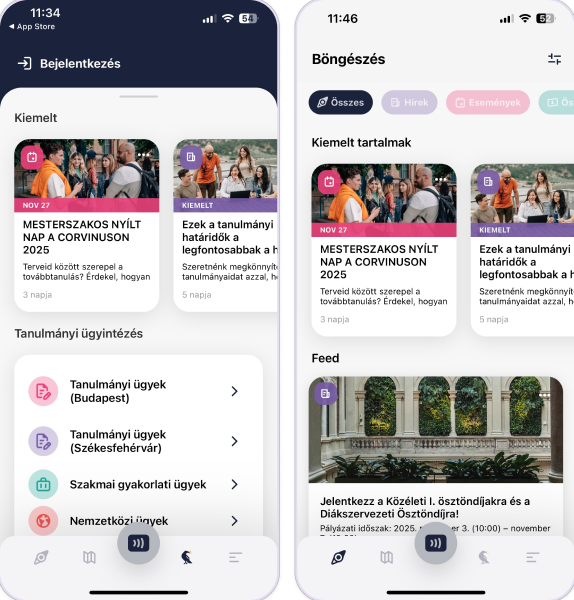
Best practices
- Friendly colours
- Good layout
- Easy navigation
- Easy to decode information
Pain points
- Some icons are hard to see or understand in different modes
- Could embed more links (like food)
- More natural photos
What to adapt
- Blog for student articles
- Onboarding information gathered together
- Interactive map
- Social life platform
- Student support
- Feedback option for the app
- Colours that engage students
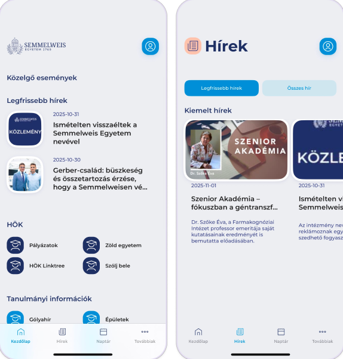
Best practices
- Consistent colour use
- Easy navigation
- Helpful information gathered in the map
Pain points
- Repeated icons
- Needs more photos
- Most functions are not integrated
- Not student-centred, too institutional
What to adapt
- Map
- Weekly, newspaper-like updates
- Phonebook
- Quick feedback about the app
- Onboarding information in one place
- Easy language change
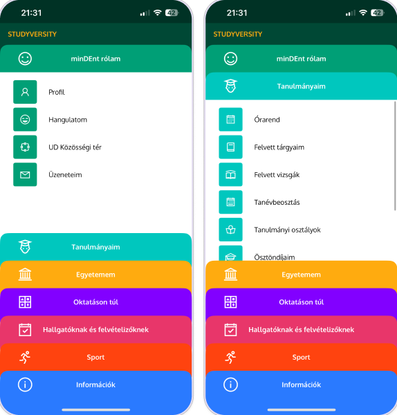
Best practices
- Student-friendly visual tone
- Strong student-centric features
- Easy navigation
- Links to helpful apps
- Subsistence calculator
Pain points
- Too bold colours on the menu page
- Needs more photos
- Playful menu vs. minimal content screens feels disjointed
- No map or directions
- No onboarding flow
What to adapt
- UNIpass places and an app for it
- Phonebook
- Links to other helpful apps
- Well-structured information
- Colours that engage students
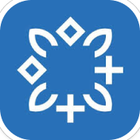
PTE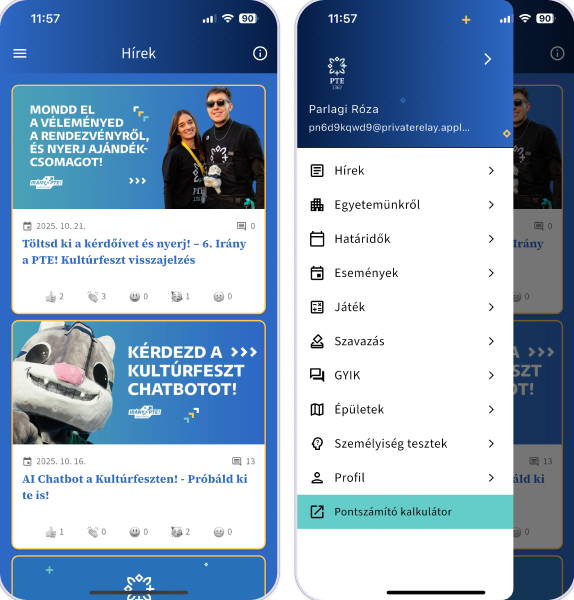
Best practices
- Q&A section
- Personal question function
- Helpful links
- Games
Pain points
- Too monochrome
- No integrated map or link between departments
- No onboarding flow
What to adapt
- Personality test: fun and informative
- Games
- Q&A
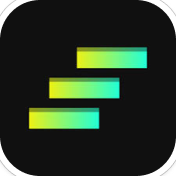
MOME ULP (current)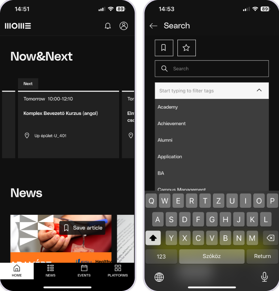
Best practices
- Very clean, minimal design
- Useful features in one app
- Accessibility options: language switch, theme toggle
Pain points
- Rarely useful in everyday school life
- Doesn't feel student-centred
- No customisation, very basic functions
- Unclear labels (e.g. “Platforms”)
- Lacks emotional, community-driven touches
What to adapt
- The starting point for this redesign
The tension
MOME's identity vs. students' taste
The current app mirrors the university website: black, elegant and refined. Students, on the other hand, asked for something brighter, looser and more fun. The redesign had to bridge the two.
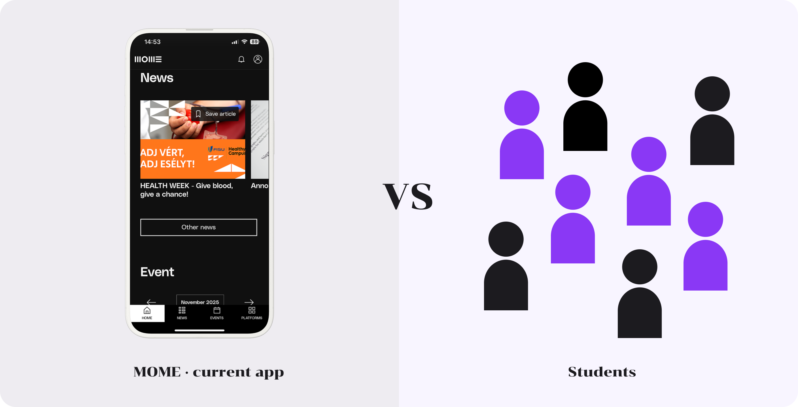
Define
From a static directory to a student dashboard
The interviews and the competitor review pointed to one root problem. The app was designed around the institution and its identity, not around what a student needs on a normal day.
Problem
Students don't use the ULP as a life platform, because it was built as a directory.
It shows the university's content in the university's style, but hides what students need right now: their next class, their deadlines, what is happening on campus.
Rebrief
“How might we transform the MOME ULP from a static administrative directory into a dynamic, student-centric dashboard that visually reflects the university's creative culture?”
Design goals
Four goals, one for each insight theme
01
Personal & timely
Show what matters to me right now: next class, deadlines, today's menu.
02
Clear hierarchy
Make the most important thing the most visible, instead of equal-looking sections.
03
Easy to find
Four clear sections, and nothing important hidden in settings.
04
Brighter & playful
Closer to students' taste and MOME's creative culture, not just its brand rules.
Develop
Exploring structure and visuals
With the rebrief set, I worked from the inside out: first reorganising the content into a clear information architecture, then sketching layouts in lo-fi, and only then exploring colour and UI.
Proposed IA
Four sections, built around a student's day
I regrouped every feature of the old app by how often students need it: daily things on Home and Schedule, campus life in MOME Life, and practical tools in the Hub.
Home
- Now
- Profile (top)
- Notifications (top)
- Settings / accessibility
- Your companion
- Saved events
Schedule
- Classes
- Deadlines
- Exams
- Neptun entrance
MOME Life
- News
- Events
- Food
- Activities / sport
- Blog
- Games and tests
Hub (tools)
- Map
- Library
- HÖK / student council
- Error feedback / IT
- Neptun
- Printshop
- Onboarding
- Phonebook
- FAQ
+ MOME cardthe digital student ID, always one tap away
Lo-fi wireframes
Testing the layout before the look
In grayscale I explored how much fits on the home screen, how the schedule and calendar work together, and where the “now” information sits.
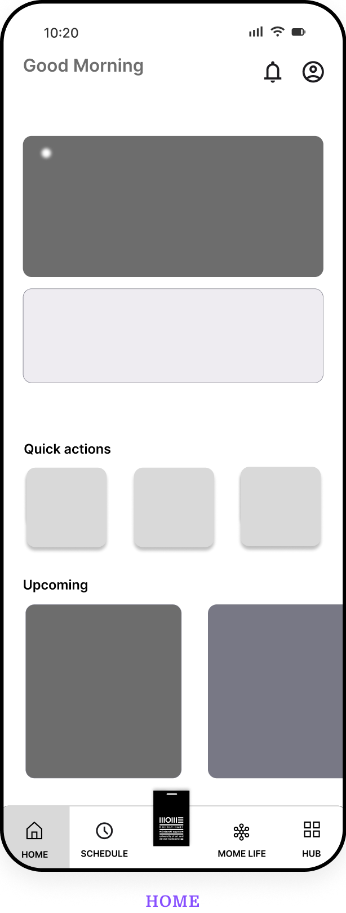
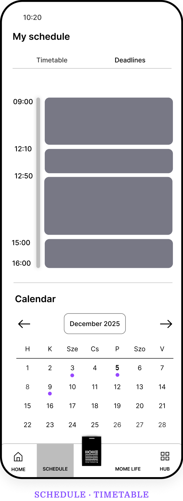
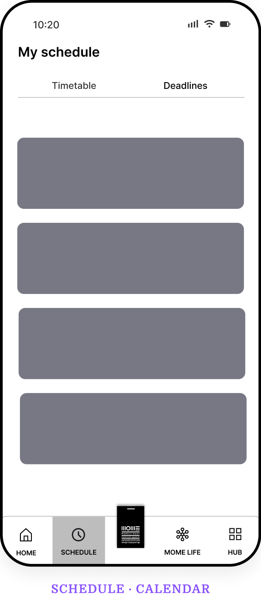
Colour palette update
Promoting MOME's secondary colours
Instead of breaking the brand, I looked inside it. MOME's identity already includes purple and yellow as secondary colours, so I elevated them to primary status to make the app more vibrant and inviting.
Before
- Black#000000
- White#FFFFFF
After
- Purple#874FFF
- Yellow#EDF115
- Lilac#DCCCFF
- White#FFFFFF
First UI versions
Bringing the structure to life
The first high-fidelity versions applied the new palette across all four sections and the MOME card.
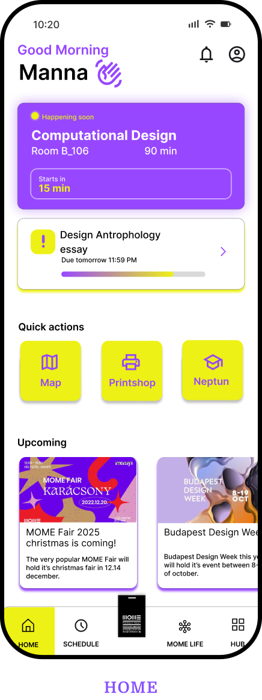
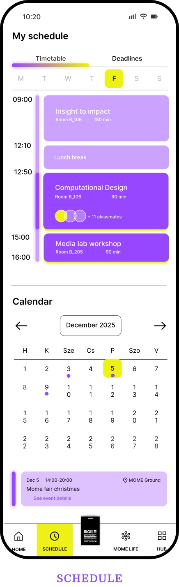
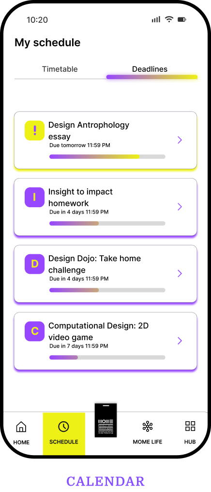
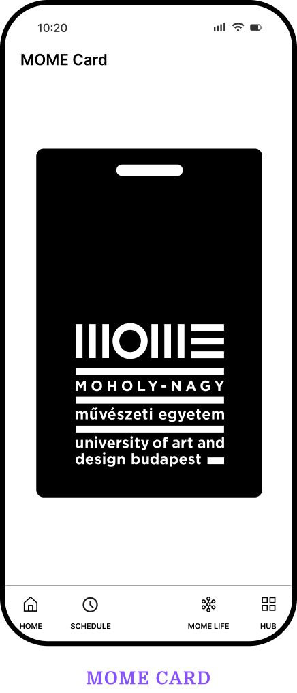
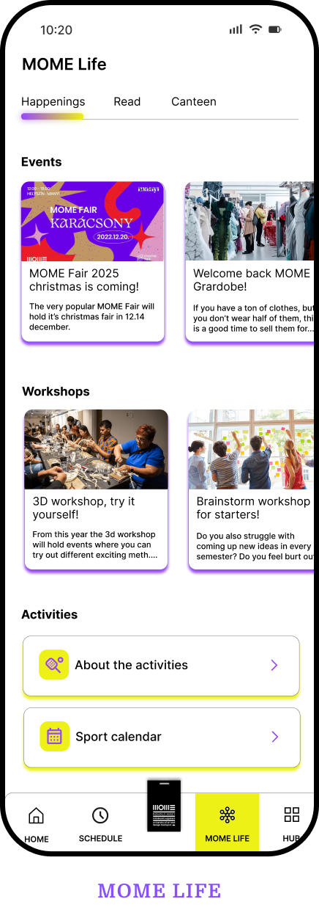
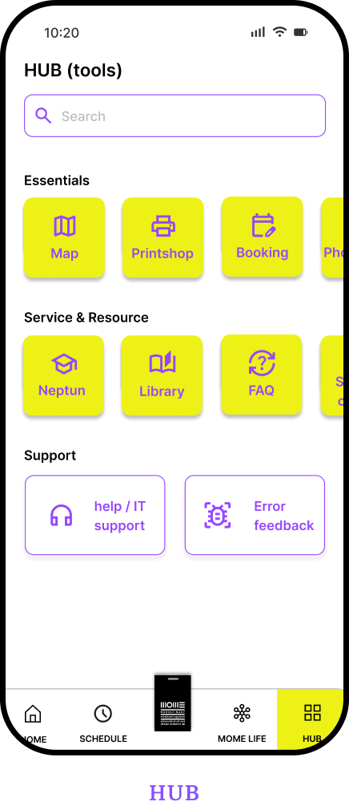
Deliver
Making the app feel alive
The final design keeps the clear structure and adds what students said was missing: personality, encouragement and each other.
Digital companions
A spirit animal for every student
Each student picks a companion that lives in the app. It adds a personal touch, gives the interface a voice, and turns an official tool into something that feels like yours.
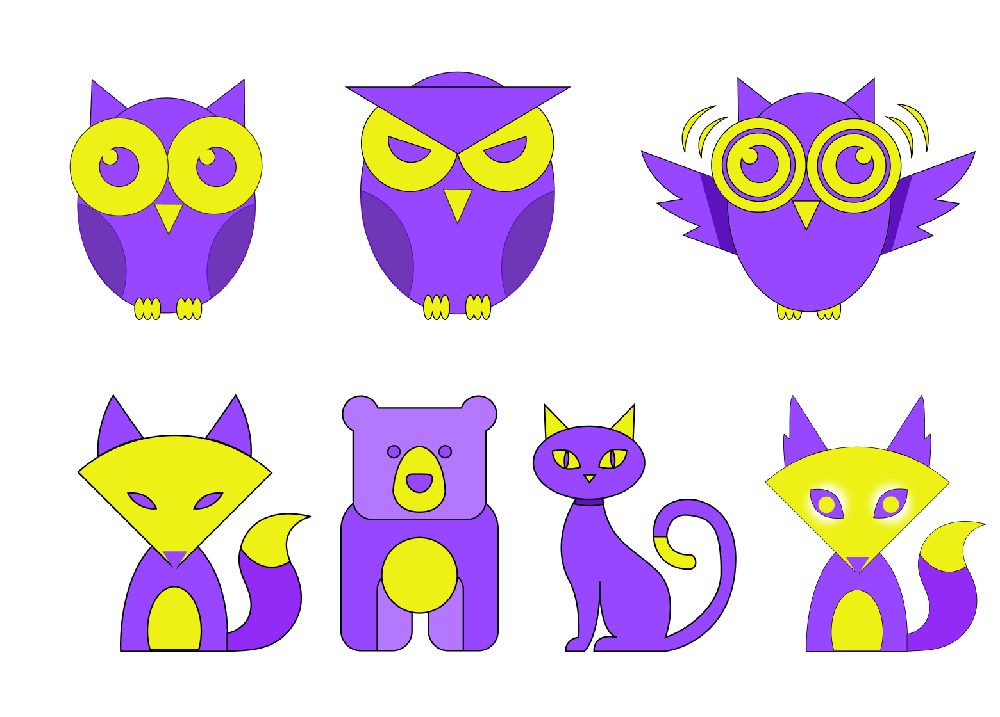
Motivational features
Support, not just information
The companion reacts to the student's day with messages for different moments: encouragement after progress, a nudge before a deadline, and a reminder that rest and balance matter too.
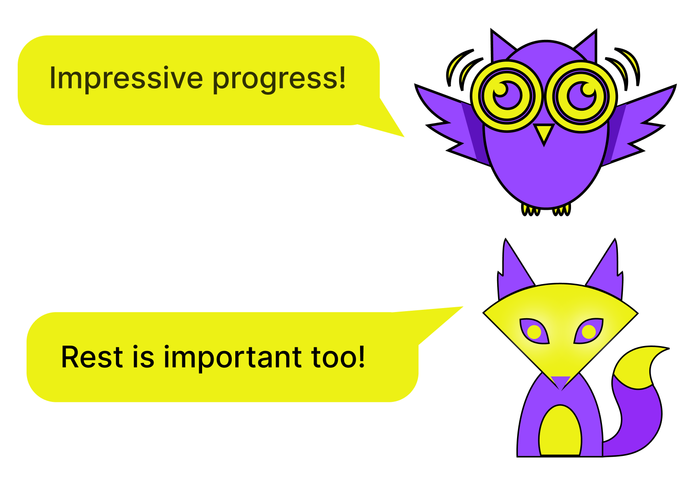
Connecting students
Making friends inside the app
Students can send and accept friend requests across programmes, see each other's spirit animals, and spot classmates in shared classes. A “life platform” should include the people.
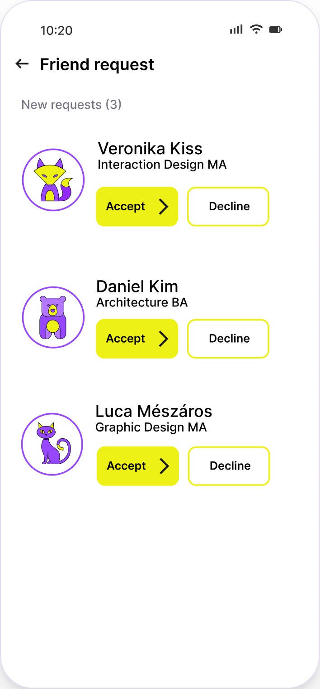
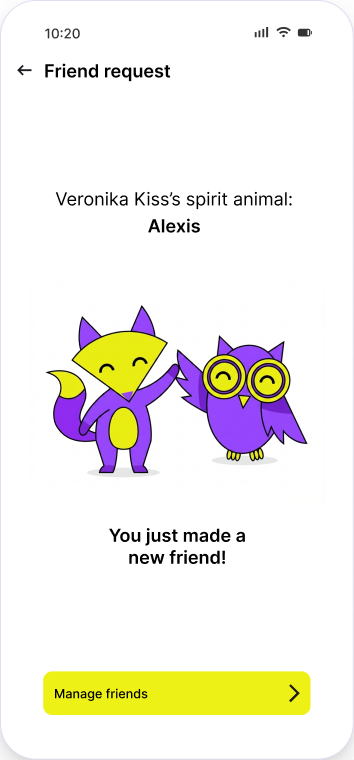
Final home screen
A home that changes with the day
The home dashboard adapts to the time: in the morning it shows the next class and deadlines, at lunch the canteen menu, in the evening tomorrow's first class and a homework reminder.
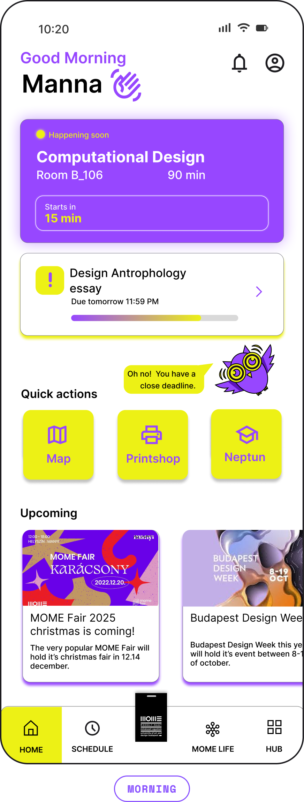
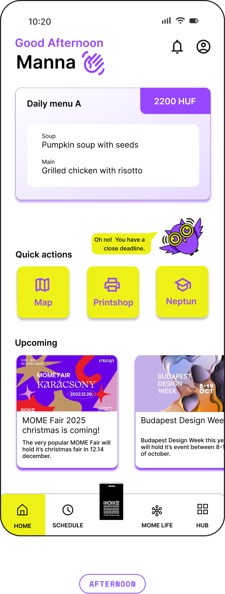
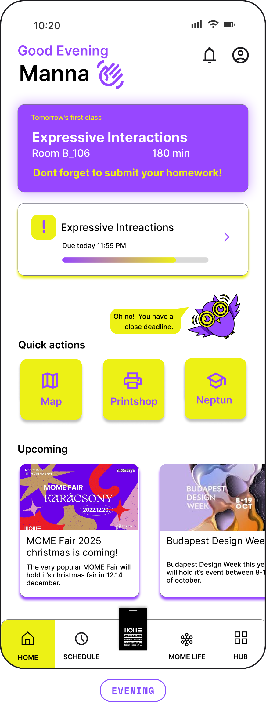
Prototype
The interactive prototype
Two clips from the prototype: the main features, and connecting with friends.
Testing
What testers said
I tested the prototype with students. The feedback confirmed the direction and showed what to improve next.
Worked well
Love the deadlines, good reminder.
The quick actions are very helpful.
To improve
Can I customise the Home dashboard? I don't see it.
Can I change my spirit animal more?
The yellow is a little bit harsh for me.
Reflection
What this project taught me
What I learned
- You can change how a product feels without breaking the brand: the new palette came from MOME's own secondary colours.
- Small emotional details, like a companion or a kind message, can totally change how an institutional tool feels.
- Testing shows what is still hidden: customisation needed to be more visible.
Next steps
- Make the home dashboard customisable from the home screen itself.
- Offer more ways to personalise the spirit animal.
- Soften the yellow and check colour contrast for accessibility.
MOME ULP